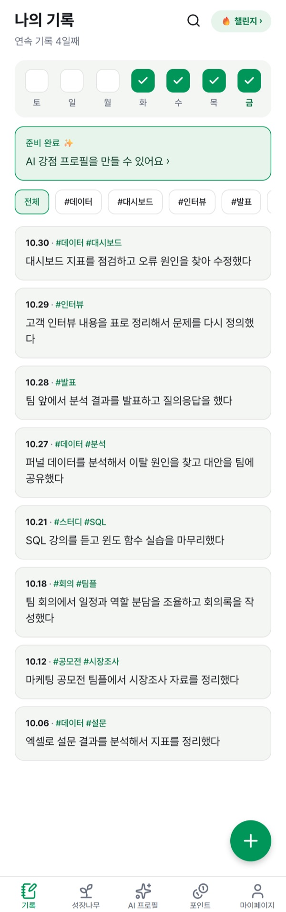
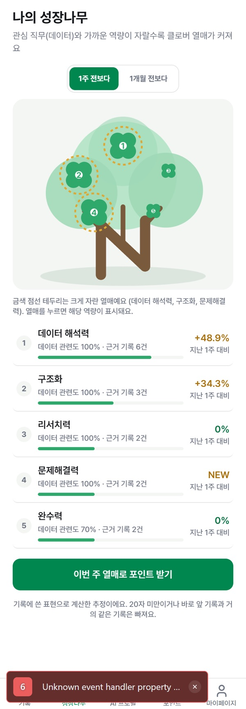
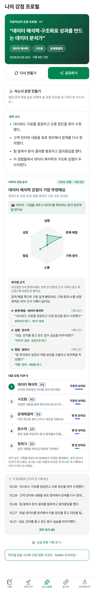

기억이 안 나요
몇 달 전에 한 일은 자소서나 포트폴리오를 쓸 때쯤이면 이미 흐릿해져 있어요.
하루 1분 커리어 기록 앱
오늘 한 일을 한 줄만 남기세요. NAWA의 AI가 흩어진 기록을 모아 강점 키워드, 한 줄 소개, 경력 서사로 정리해 드려요. 모든 문장에는 근거가 된 내 기록이 붙어 있어요.

몇 달 전에 한 일은 자소서나 포트폴리오를 쓸 때쯤이면 이미 흐릿해져 있어요.
메모앱, 캘린더, 메신저에 남긴 조각들이 하나의 강점으로 이어지지 않아요.
프리랜서와 1인 창업가처럼 조직 밖에서 나를 보여 줘야 하는 사람이 늘고 있어요.
작동 방식
"오늘 뭘 하셨나요?"에 한 줄만 쓰면 돼요. AI가 #공모전 #시장조사 같은 태그를 추천해요.
기록이 3건 이상 모이면 AI가 반복해서 드러나는 강점을 찾아요. 분석은 10초면 끝나요.
근거 기록을 확인하고, 고치고, 승인해야 프로필이 확정돼요. 마지막 결정은 항상 내가 해요.
기능
연속 기록 일수와 주간 스트릭으로 기록 습관을 만들어요. 7일 입문 챌린지처럼 다른 사람들과 함께하는 기록 챌린지도 있어요.
관심 직무와 가까운 역량이 자랄수록 나무의 클로버 열매가 커져요. 지난주, 지난달과 비교해 어떤 역량이 얼마나 자랐는지 한눈에 볼 수 있어요.

강점 키워드, 한 줄 소개, 경력 서사를 만들어 드려요. 문장마다 어떤 기록에서 나온 내용인지 함께 보여 줘서, 면접에서도 자신 있게 이야기할 수 있어요.

NAWA의 약속
AI는 내가 남긴 기록과 관심 직무만 봐요. 근거 기록이 없는 문장은 서버에서 걸러내요.
AI가 만든 프로필은 초안일 뿐이에요. 직접 고치고 승인한 프로필만 쓰여요.
내 기록은 판매하지 않고, 동의 없이 다른 곳에 제공하지 않아요. 탈퇴하면 기록도 모두 지워져요.
이런 분께 필요해요
공모전, 스터디, 인턴 경험을 근거 있는 강점 프로필과 자소서 소재로 정리해요.
이직이나 직무 전환을 앞두고 그동안의 성과와 강점 변화를 돌아봐요.
조직 밖에서도 나를 보여 줄 수 있는 포트폴리오용 프로필을 만들어요.
로드맵
하루 한 줄 기록, 성장나무, 근거 있는 AI 프로필로 꾸준히 기록하는 습관을 만들어요.
승인한 강점 프로필을 바탕으로 이력서 첨삭, 커리어 상담, 창업 멘토링 전문가를 추천해요.
사용자가 동의한 범위 안에서 채용 등 다음 기회로 이어지는 연결을 준비해요.
NAWA는 지금 출시를 준비하고 있어요.